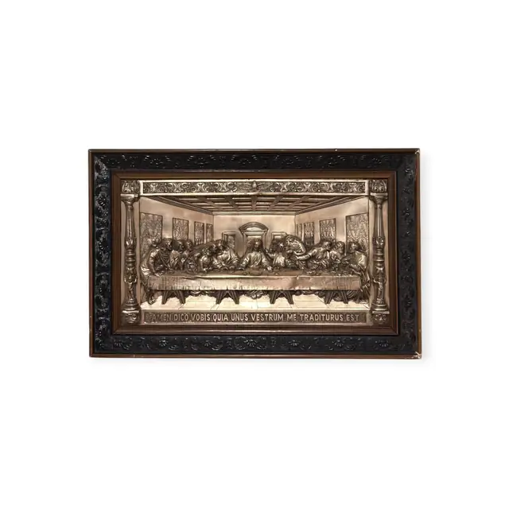
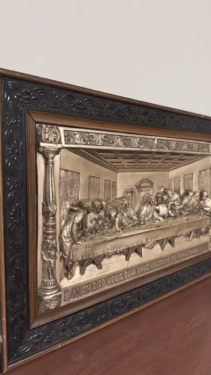
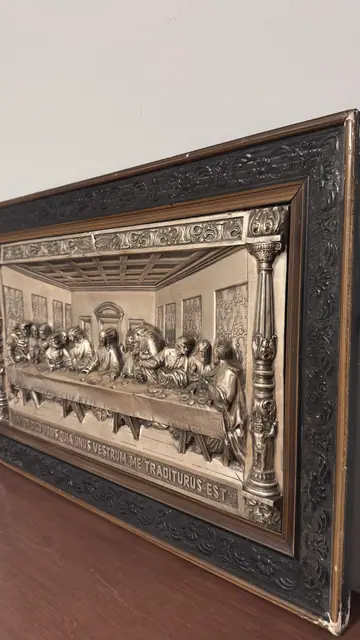
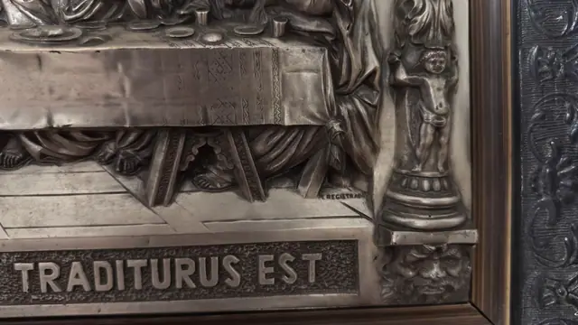

Handmade Objects
The Last Supper, Silvered Metal Relief Plaque, Framed
· mid 20th century
Price Upon Request




About the Item
A deep repousse relief in silvered metal reworking Leonardo's composition: the long draped table runs the full width with the apostles grouped in agitated threes, Christ calm at the centre beneath a coffered ceiling and a round-headed doorway. Fluted columns rise at each end, each with a small standing putto on a moulded base and a grotesque mask below. A ribbon panel across the foot carries the Latin text in raised capitals. The metal is bright on the high points and darkened in the recesses, giving a strong pewter-to-charcoal contrast. Set in a deep ebonised composition frame with a moulded foliate scroll pattern and a copper-toned inner slip. Medium: silvered or electroplated metal repousse relief on a board backing. Inscribed on the reverse or mount: AMEN DICO VOBIS QUIA UNUS VESTRUM ME TRADITURUS EST; M. REGISTRADA. Condition: Tarnish and darkening throughout the recesses, which reads as age rather than damage. Light rubbing to the black frame at the corners and a small chip at the lower right. No dents or splits in the relief.
Details
- Creation Year:
- mid 20th century
- Dimensions:
- Height: 19.7 in (50.04 cm)
Width: 30.25 in (76.84 cm)
outside of frame - Medium:
- silvered or electroplated metal repousse relief on a board backing
- Period:
- 20Th
- Condition:
- Offered in the condition shown in the photographs.
- Reference Number:
- VO-178
- Documentation:
- no certificate photographed
- Gallery Location:
- AMEN DICO VOBIS QUIA UNUS VESTRUM ME TRADITURUS EST; M. REGISTRADA